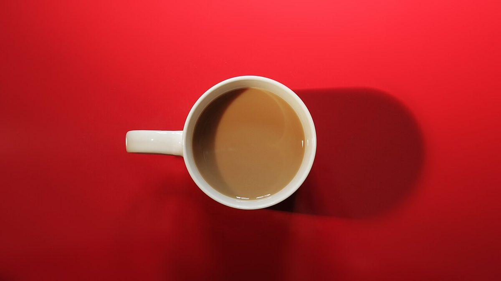
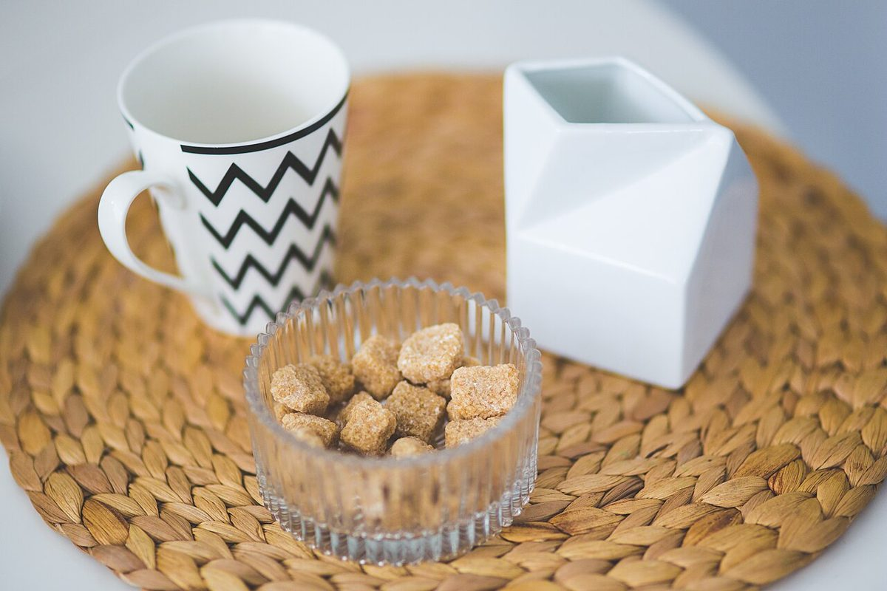

3右の羽結び目から右へ広がる布の部分。
口コミ
想像した声(イメージ例)です。制作側の創作であり、実在のお客様の投稿ではありません。

声想像した声
イメージ例Instagramをのぞいてみたい。実際に足を運べる日が楽しみです。
イメージ例写真が増えたら、ぜひ行ってみたいです。
イメージ例行ってみたい気持ちがふくらみました。投稿を楽しみに待ちたいです。
上の3件は制作側の創作で、実在のお客様の投稿ではありません。
写写真(イメージ)



羽右の羽とは
結び目から右へ広がる布の部分です。「口コミ」のページに見立てました(制作側の連想で、お店の理念・由来とは無関係です)。